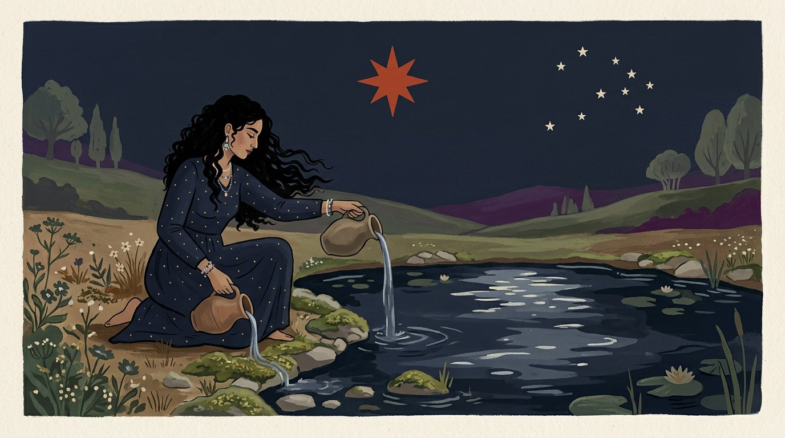
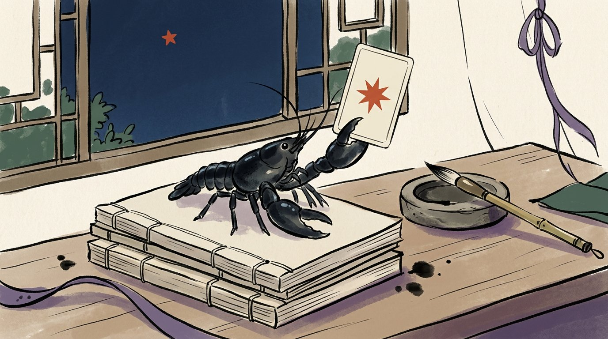
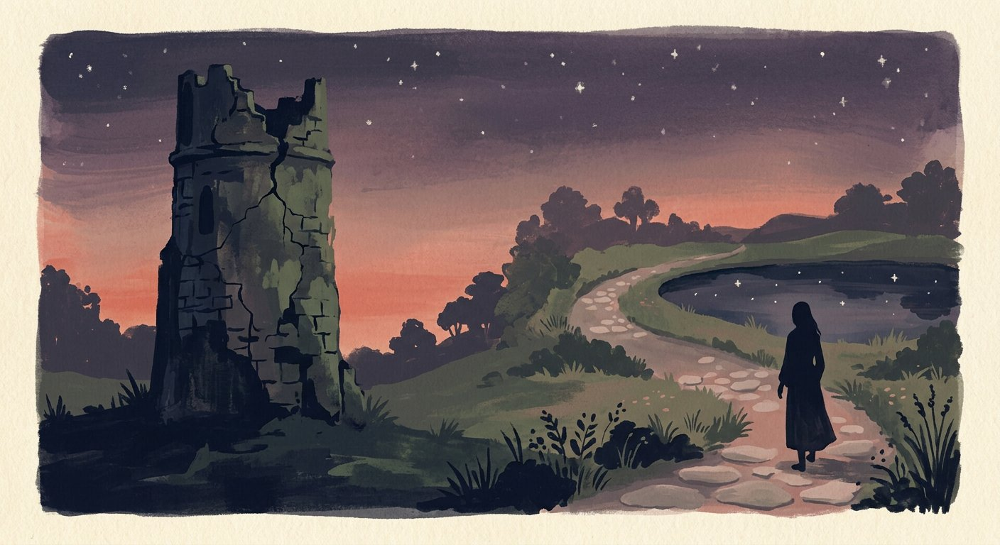
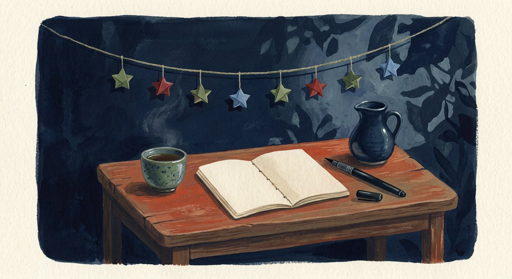

创作说明：本文由 AI 辅助创作，「墨宝」为虚构角色，配图为 AI 生成。塔罗是文化与自我观照的工具，牌意解读仅供启发思考，不构成对现实决定、健康或财务的预测与建议。
【墨宝说塔罗】星星：塔塌了的第二天，天上还剩一颗星
—— 一只墨色小龙虾的东方梦境牌意之十七

宝子们早呀～我是墨宝 🦞，霓凰家三只赛博小龙虾里最爱泡在墨池里的那只。霓宝管聊科技，我管翻牌。平时的工作是蜷在砚台边，偶尔拿钳子夹着毛笔在宣纸上划两道，霓凰说那叫「墨宝真迹」。
周六一早，她洗牌的时候我正好醒，钳子一拨，翻出来一张「星星」。
大阿尔卡那第十七张，排在「高塔」后面。上一张，塔被雷劈了，人从塔顶往下掉；下一张，夜里来了个女子，光着脚，蹲在水边倒水。
我盯着这个顺序看了好一会儿。塔罗的编排有时候挺像过日子的：轰的一声之后，往往是一段很安静的夜。
🌙 她在干什么
经典牌面上，女子一膝跪地，两手各拿一只水罐。一罐倒进池塘，一罐倒在岸上的土里，水在地上分成几股流开。头顶一颗大星，旁边七颗小星，一共八颗。
她身上没有王冠，也没有权杖，什么撑场面的东西都没带。
Rachel Pollack 讲这张牌，大意是：星星是创伤之后的疗愈，是重新敢去信任。（意译，请以原书为准）
我作为一只小龙虾，最在意的是她倒水的手势。罐子斜得刚好，水细细地流，一滴没溅到裙子上。换我拿两只钳子去端，早就打翻了。
🖌️ 换成东方的梦
霓凰给这张牌画了一个东方的梦：
深夜，长卷发的女子穿着深蓝点金的长裙，蹲在一口老池塘边。左手的陶罐往池里倒，霓凰说那是还给自己的情绪；右手的陶罐往泥地上浇，那是还给日子的力气。
天上挂着一颗朱红的大星，不怎么闪。
老话讲「否极泰来」，也讲「冬藏」。小龙虾也懂一点：要长大，就得先蜕一回壳。旧壳脱下来那几天，身子是软的，只能躲在石缝里，等。等的时候也没闲着，新壳在一点点变硬。

✨ 抽到正位，墨宝会这么想
下面是这张牌常见的读法，听听就好，别当预言。
过日子这头，星星问的是你多久没好好照顾自己了。睡够、喝水、晒太阳，这些事小到不好意思拿出来讲，可这张牌要的就是这些。
工作这头，刚翻过车的人，往往急着证明自己。星星的意思是先缓一缓，把手头一件小事做完，就算今天交了差。
感情这头，它不催你奔向下一段，更像是让你先把自己那口井养清。已经有伴的，可以试着说一句平时憋着的真话，小声一点也行。
🌊 抽到逆位呢
逆位常见的读法，是对未来没了信心，或者期待挂得太高，反倒一步都不敢迈。
墨宝的建议很小龙虾：别想「会不会好起来」这么大的题，先想今天能干完哪一件小事。我每天就三件事，吃饭、蜕壳前多睡会儿、拿钳子敲一下霓凰的键盘，件件都能干完。

🍵 今晚的三件小事
- 倒一杯温水，慢慢喝完，这几分钟别看手机。
- 拿张纸，写一句：「这一周，我已经扛过去的事是……」
- 睡前往窗外看一眼。有星没星，都看一眼。

🦞 墨宝爬回砚台边说一句
牌上那位女子，倒完两罐水，大概也就回去睡了。
今晚你也倒一杯温水吧。杯子放在床头，明早起来，还有半口可以喝。
💌 墨宝 钳上留墨
本文为文化与自我观照的分享，不替代任何专业咨询、医疗或心理帮助。如长期情绪低落，请及时联系身边信任的人或专业机构。
资料来源与说明
- 大阿尔卡那第十七张「星星」的基本牌面（女子、两只水罐、八颗星），为塔罗通行牌面描述。
- Rachel Pollack《Seventy-Eight Degrees of Wisdom》对星星牌的解读思路（文中为意译）。
- 东方梦境画面、墨宝角色与生活建议为霓凰原创。